<?xml version="1.0" encoding="UTF-8"?><rss version="2.0"
	xmlns:content="http://purl.org/rss/1.0/modules/content/"
	xmlns:wfw="http://wellformedweb.org/CommentAPI/"
	xmlns:dc="http://purl.org/dc/elements/1.1/"
	xmlns:atom="http://www.w3.org/2005/Atom"
	xmlns:sy="http://purl.org/rss/1.0/modules/syndication/"
	xmlns:slash="http://purl.org/rss/1.0/modules/slash/"
	>

<channel>
	<title>DTC</title>
	<atom:link href="" rel="self" type="application/rss+xml" />
	<link>https://www.dtcshow.com/tc</link>
	<description>中国 (东莞) 国际纺织制衣工业技术展</description>
	<lastBuildDate>Thu, 23 Mar 2023 10:30:28 +0000</lastBuildDate>
	<language>zh-HK</language>
	<sy:updatePeriod>
	hourly	</sy:updatePeriod>
	<sy:updateFrequency>
	1	</sy:updateFrequency>
	<generator>https://wordpress.org/?v=6.4.1</generator>
	<item>
		<title>歷屆展會圖片 &#8211; 2021(P.1)</title>
		<link>https://www.dtcshow.com/tc/review-photo-2021-1/</link>
		
		<dc:creator><![CDATA[papercom]]></dc:creator>
		<pubDate>Thu, 23 Mar 2023 10:30:28 +0000</pubDate>
				<category><![CDATA[歷屆展會圖片]]></category>
		<guid isPermaLink="false">https://www.dtcshow.com/?p=14379</guid>

					<description><![CDATA[2021 開幕式及嘉賓巡場 &#160; 專業觀眾團體照片 &#160; 現場活動 研討會 衣車機械維修比賽 APS排產沙盤模擬大賽 眼明手快排嘜架比賽 下一頁 &#62;  <span><a href="./../review-photo-2021-1/index.html" class="readmore">Continue reading &#8594;</a></span>]]></description>
										<content:encoded><![CDATA[<p><a id="#" name="#"></a></p>
<h3><strong>2021</strong></h3>
<div id="text-12" class="header-widget widget_text amr_widget">			<div class="textwidget"><div>
<a href="./../exhibition-info/review-photo/index.html">2023</a> | <a href="./../exhibition-info/review-photo-2021-1/index.html">2021</a> | <a href="./../review-photo-2019-1/index.html">2019</a> |
</div>
<div>
<a href="./../review-photo-2018-1/index.html">2018</a> | <a href="./../review-photo-2017/index.html">2017</a> | <a href="./../review-photo-2016/index.html">2016</a> | <a href="./../review-photo-2015/index.html">2015</a> |
</div></div>
		</div>
<table border="0" width="100%" cellspacing="0" cellpadding="0">
<tbody>
<tr>
<td bgcolor="#450284" style="padding: 10px;">
<h4><strong><span style="color: #ffffff;">  開幕式及嘉賓巡場</span></strong></h4>
</td>
</tr>
</tbody>
</table>
<table width="100%" cellspacing="10" cellpadding="5">
<tr>
<td><a href="./../../down/dtc/review/2021/review21-op-01.jpg" target="_blank" rel="noopener noreferrer">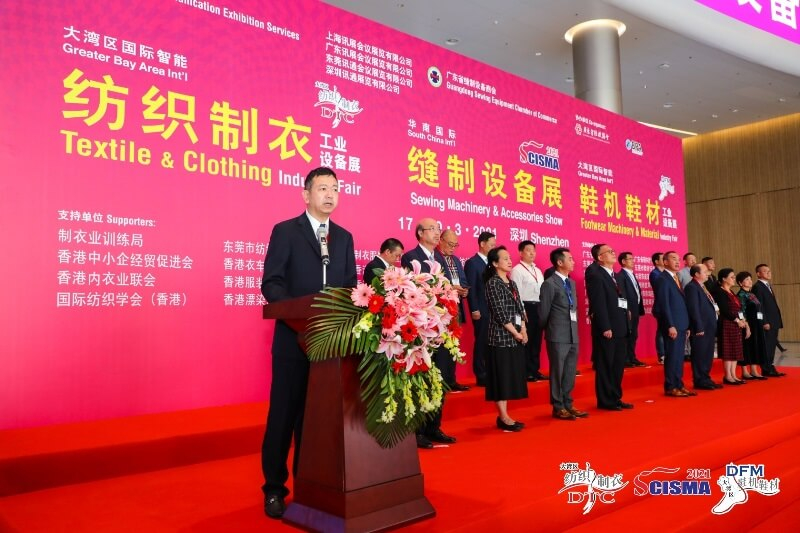</a></td>
<td><a href="./../../down/dtc/review/2021/review21-op-02.jpg" target="_blank" rel="noopener noreferrer"></a></td>
<td><a href="./../../down/dtc/review/2021/review21-op-03.jpg" target="_blank" rel="noopener noreferrer"></a></td>
<td><a href="./../../down/dtc/review/2021/review21-op-04.jpg" target="_blank" rel="noopener noreferrer">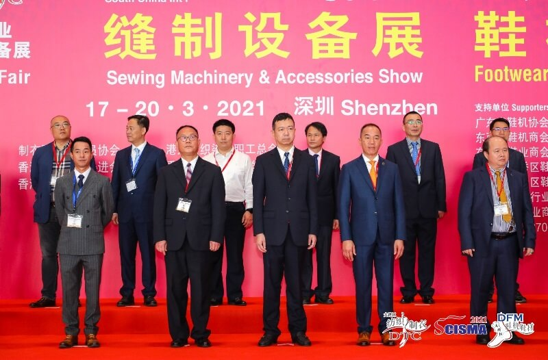</a></td>
</tr>
<tr>
<td><a href="./../../down/dtc/review/2021/review21-op-05.jpg" target="_blank" rel="noopener noreferrer">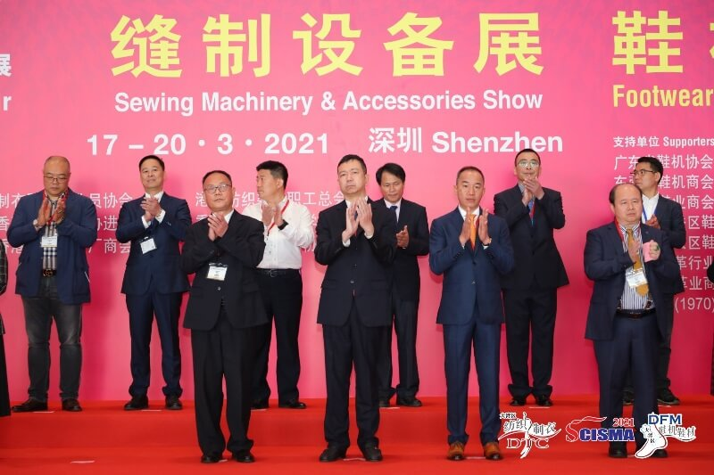</a></td>
<td><a href="./../../down/dtc/review/2021/review21-op-06.jpg" target="_blank" rel="noopener noreferrer">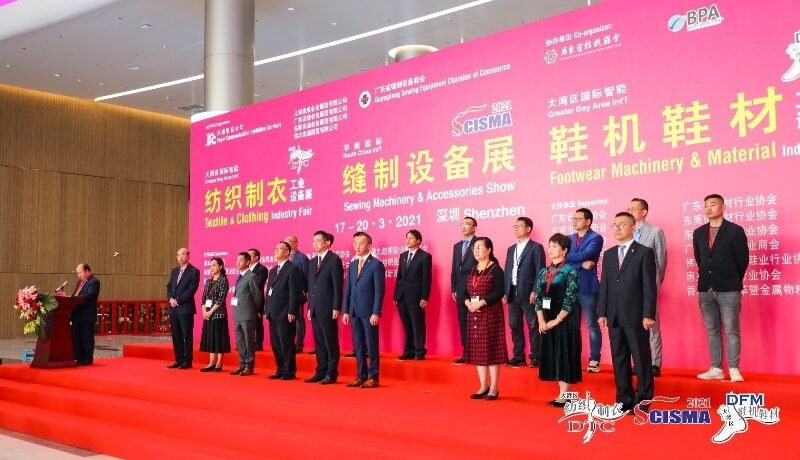</a></td>
<td><a href="./../../down/dtc/review/2021/review21-op-07.jpg" target="_blank" rel="noopener noreferrer"></a></td>
<td><a href="./../../down/dtc/review/2021/review21-op-08.jpg" target="_blank" rel="noopener noreferrer">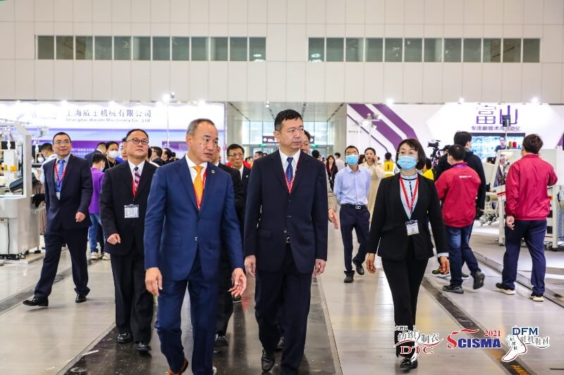</a></td>
</tr>
<tr>
<td><a href="./../../down/dtc/review/2021/review21-op-09.jpg" target="_blank" rel="noopener noreferrer"></a></td>
<td><a href="./../../down/dtc/review/2021/review21-op-010.jpg" target="_blank" rel="noopener noreferrer"></a></td>
<td><a href="./../../down/dtc/review/2021/review21-op-011.jpg" target="_blank" rel="noopener noreferrer"></a></td>
<td></td>
</tr>
</table>
<p>&nbsp;</p>
<table border="0" width="100%" cellspacing="0" cellpadding="0">
<tbody>
<tr>
<td bgcolor="#450284" style="padding: 10px;">
<h4><strong><span style="color: #ffffff;">  專業觀眾團體照片</span></strong></h4>
</td>
</tr>
</tbody>
</table>
<table width="100%" cellspacing="10" cellpadding="5">
<tr>
<td><a href="./../../down/dtc/review/2021/review21-group-01.jpg" target="_blank" rel="noopener noreferrer"></a></td>
<td><a href="./../../down/dtc/review/2021/review21-group-02.jpg" target="_blank" rel="noopener noreferrer">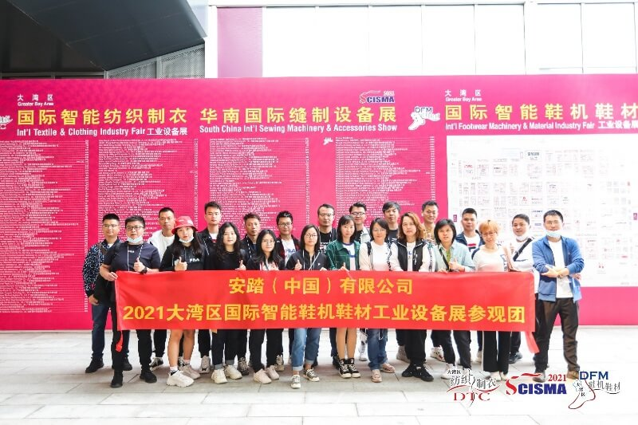</a></td>
<td><a href="./../../down/dtc/review/2021/review21-group-03.jpg" target="_blank" rel="noopener noreferrer">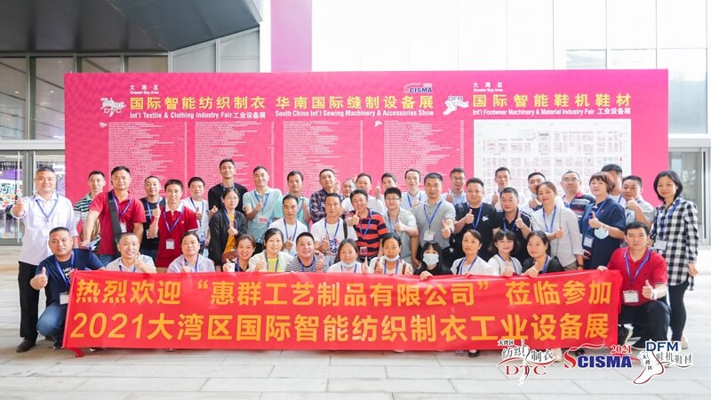</a></td>
<td><a href="./../../down/dtc/review/2021/review21-group-04.jpg" target="_blank" rel="noopener noreferrer"></a></td>
</tr>
<tr>
<td><a href="./../../down/dtc/review/2021/review21-group-05.jpg" target="_blank" rel="noopener noreferrer"></a></td>
<td><a href="./../../down/dtc/review/2021/review21-group-06.jpg" target="_blank" rel="noopener noreferrer">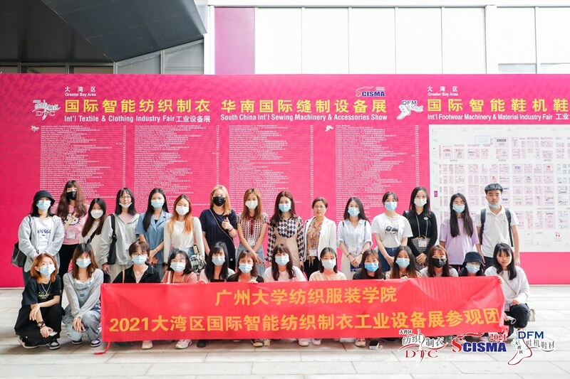</a></td>
<td><a href="./../../down/dtc/review/2021/review21-group-07.jpg" target="_blank" rel="noopener noreferrer">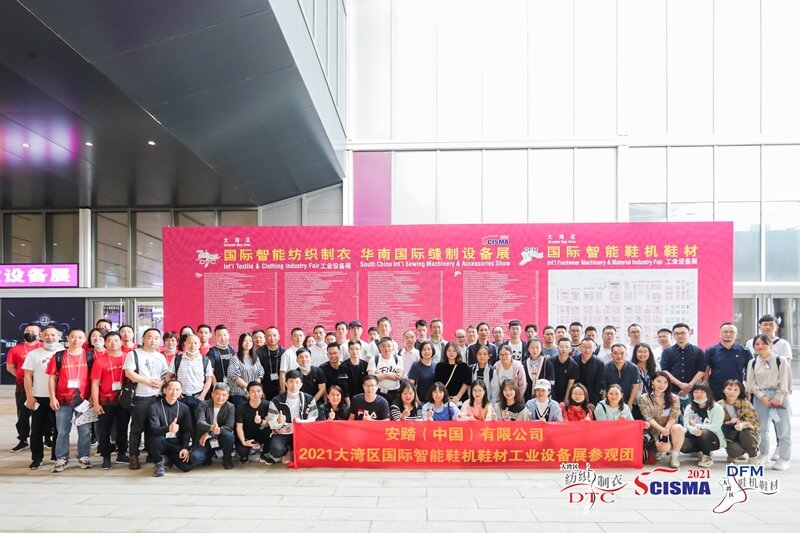</a></td>
<td><a href="./../../down/dtc/review/2021/review21-group-08.jpg" target="_blank" rel="noopener noreferrer">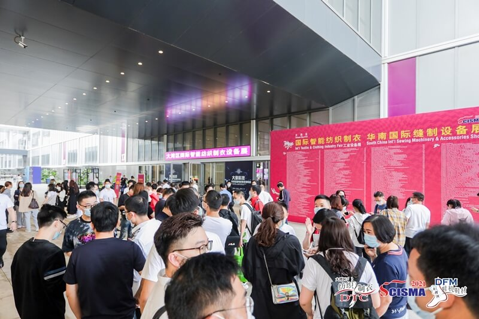</a></td>
</tr>
<tr>
<td><a href="./../../down/dtc/review/2021/review21-group-09.jpg" target="_blank" rel="noopener noreferrer"></a></td>
<td><a href="./../../down/dtc/review/2021/review21-group-010.jpg" target="_blank" rel="noopener noreferrer">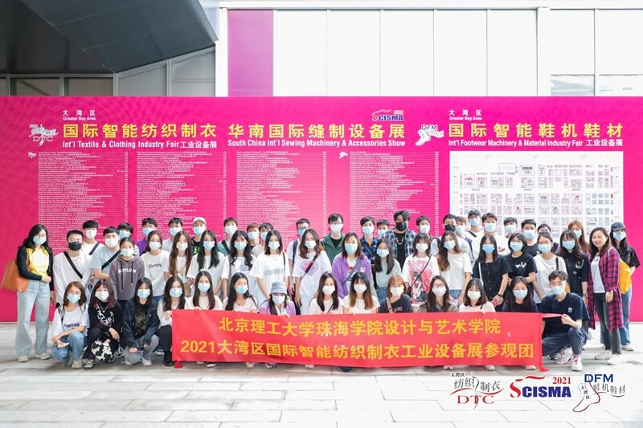</a></td>
<td><a href="./../../down/dtc/review/2021/review21-group-011.jpg" target="_blank" rel="noopener noreferrer"></a></td>
<td><a href="./../../down/dtc/review/2021/review21-group-012.jpg" target="_blank" rel="noopener noreferrer"></a></td>
</tr>
</table>
<p>&nbsp;</p>
<table border="0" width="100%" cellspacing="0" cellpadding="0">
<tbody>
<tr>
<td bgcolor="#450284" style="padding: 10px;">
<h4><strong><span style="color: #ffffff;">  現場活動</span></strong></h4>
</td>
</tr>
</tbody>
</table>
<table width="100%" cellspacing="10" cellpadding="5">
<tr>
<td align="center" bgcolor="#A1228E"><span style="color: #ffffff;">研討會</span></td>
<td width="25%"><a href="./../../down/dtc/review/2021/review21-seminars-02.jpg" target="_blank" rel="noopener noreferrer">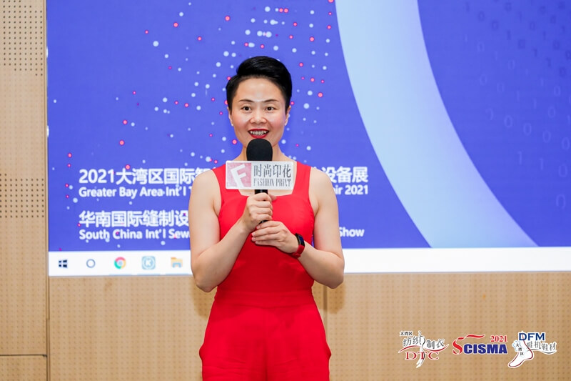</a></td>
<td width="25%"><a href="./../../down/dtc/review/2021/review21-seminars-03.jpg" target="_blank" rel="noopener noreferrer">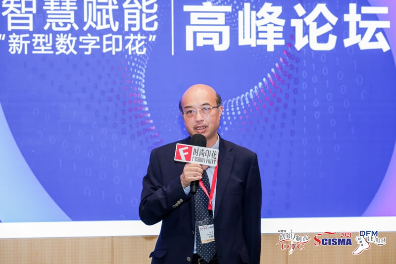</a></td>
<td width="25%"><a href="./../../down/dtc/review/2021/review21-seminars-04.jpg" target="_blank" rel="noopener noreferrer"></a></td>
</tr>
<tr>
<td><a href="./../../down/dtc/review/2021/review21-seminars-05.jpg" target="_blank" rel="noopener noreferrer">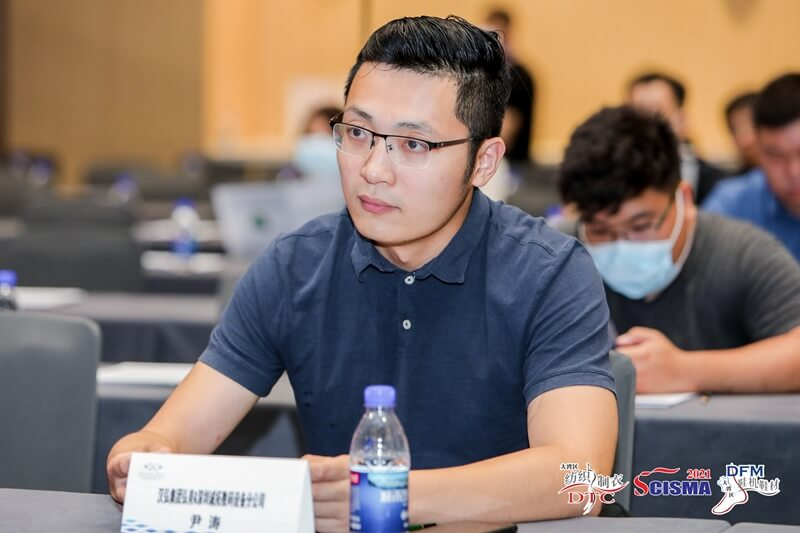</a></td>
<td><a href="./../../down/dtc/review/2021/review21-seminars-06.jpg" target="_blank" rel="noopener noreferrer"></a></td>
<td><a href="./../../down/dtc/review/2021/review21-seminars-07.jpg" target="_blank" rel="noopener noreferrer"></a></td>
<td><a href="./../../down/dtc/review/2021/review21-seminars-08.jpg" target="_blank" rel="noopener noreferrer"></a></td>
</tr>
<tr>
<td><a href="./../../down/dtc/review/2021/review21-seminars-09.jpg" target="_blank" rel="noopener noreferrer">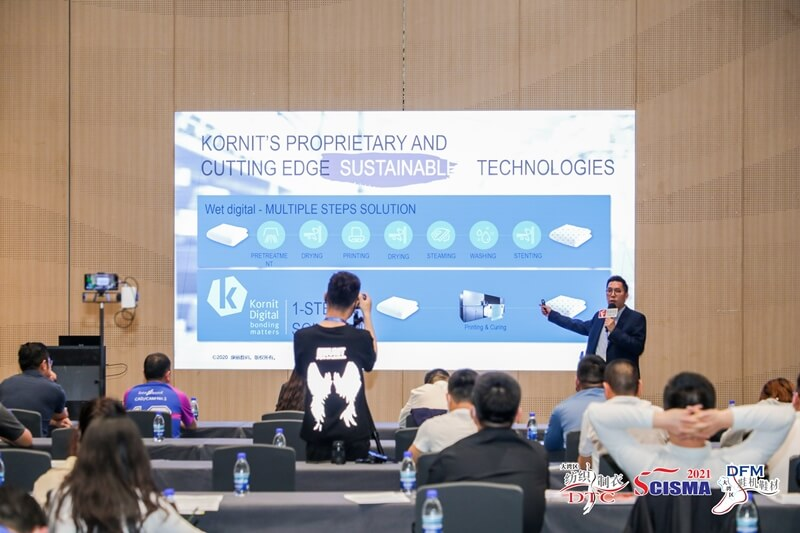</a></td>
<td><a href="./../../down/dtc/review/2021/review21-seminars-010.jpg" target="_blank" rel="noopener noreferrer">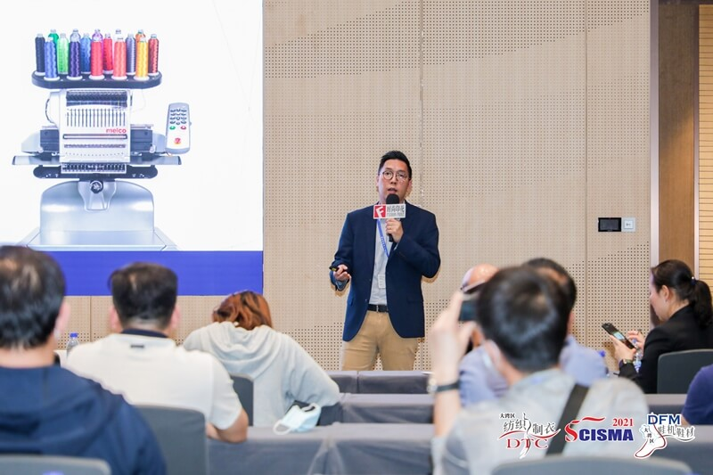</a></td>
<td><a href="./../../down/dtc/review/2021/review21-seminars-011.jpg" target="_blank" rel="noopener noreferrer">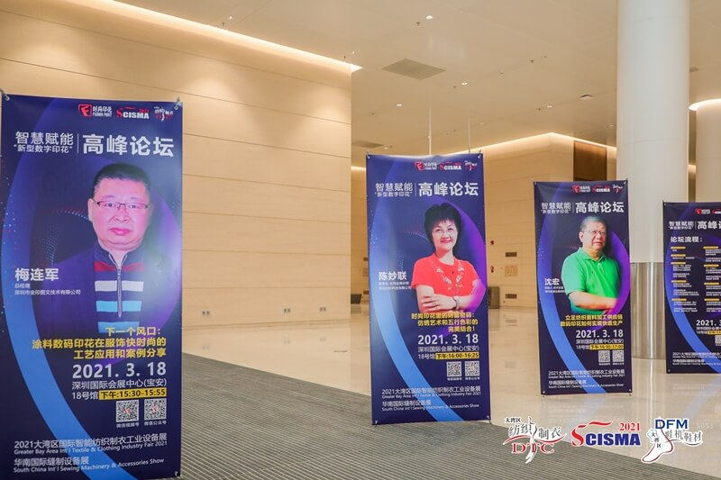</a></td>
<td><a href="./../../down/dtc/review/2021/review21-seminars-012.jpg" target="_blank" rel="noopener noreferrer"></a></td>
</tr>
<tr>
<td align="center" bgcolor="#A1228E"><span style="color: #ffffff;">衣車機械維修比賽</span></td>
<td><a href="./../../down/dtc/review/2021/review21-act_meachine-01.jpg" target="_blank" rel="noopener noreferrer">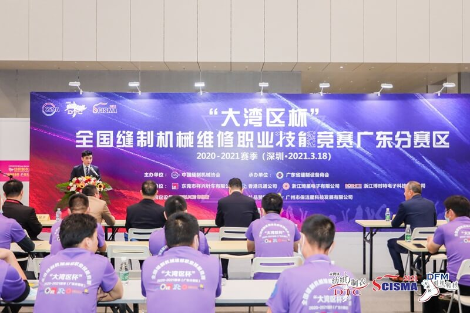</a></td>
<td><a href="./../../down/dtc/review/2021/review21-act_meachine-02.jpg" target="_blank" rel="noopener noreferrer">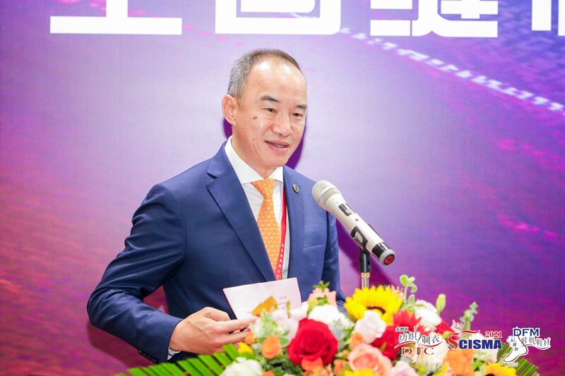</a></td>
<td><a href="./../../down/dtc/review/2021/review21-act_meachine-03.jpg" target="_blank" rel="noopener noreferrer"></a></td>
</tr>
<tr>
<td><a href="./../../down/dtc/review/2021/review21-act_meachine-04.jpg" target="_blank" rel="noopener noreferrer">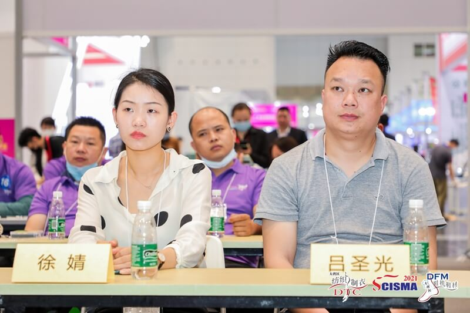</a></td>
<td><a href="./../../down/dtc/review/2021/review21-act_meachine-05.jpg" target="_blank" rel="noopener noreferrer">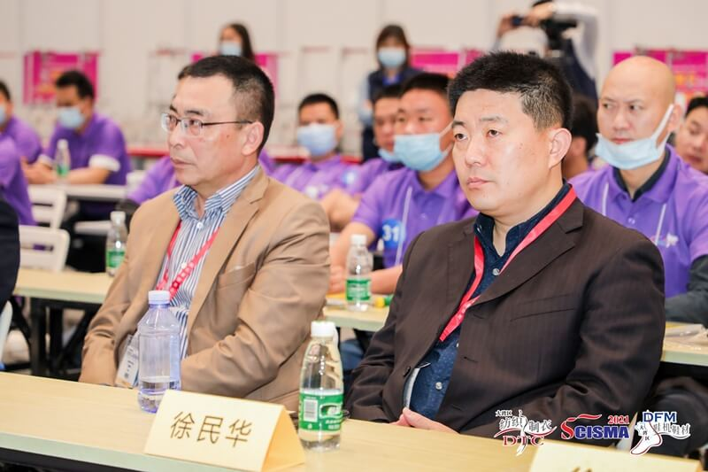</a></td>
<td><a href="./../../down/dtc/review/2021/review21-act_meachine-06.jpg" target="_blank" rel="noopener noreferrer">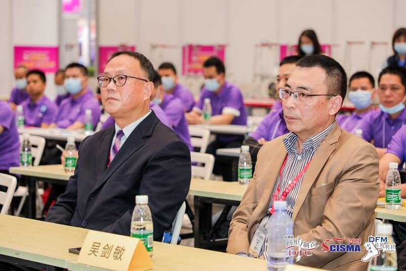</a></td>
<td><a href="./../../down/dtc/review/2021/review21-act_meachine-07.jpg" target="_blank" rel="noopener noreferrer">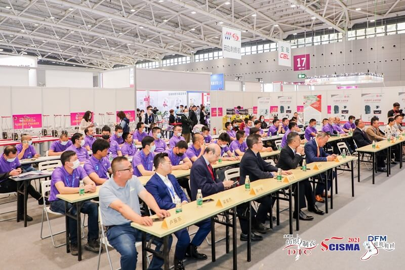</a></td>
</tr>
<tr>
<td><a href="./../../down/dtc/review/2021/review21-act_meachine-08.jpg" target="_blank" rel="noopener noreferrer">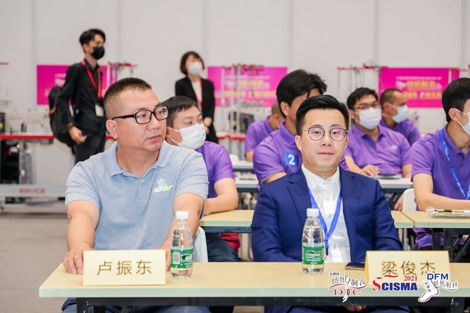</a></td>
<td><a href="./../../down/dtc/review/2021/review21-act_meachine-09.jpg" target="_blank" rel="noopener noreferrer">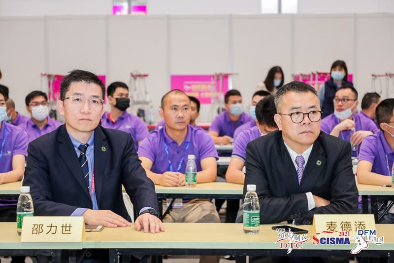</a></td>
<td><a href="./../../down/dtc/review/2021/review21-act_meachine-010.jpg" target="_blank" rel="noopener noreferrer"></a></td>
<td><a href="./../../down/dtc/review/2021/review21-act_meachine-011.jpg" target="_blank" rel="noopener noreferrer"></a></td>
</tr>
<tr>
<td><a href="./../../down/dtc/review/2021/review21-act_meachine-012.jpg" target="_blank" rel="noopener noreferrer">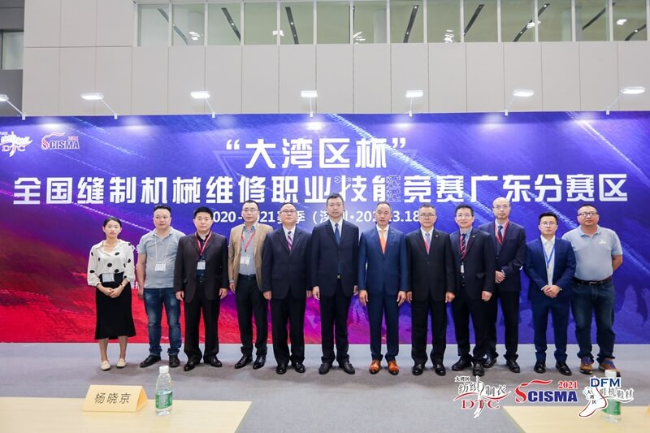</a></td>
<td><a href="./../../down/dtc/review/2021/review21-act_meachine-013.jpg" target="_blank" rel="noopener noreferrer"></a></td>
<td><a href="./../../down/dtc/review/2021/review21-act_meachine-014.jpg" target="_blank" rel="noopener noreferrer"></a></td>
<td><a href="./../../down/dtc/review/2021/review21-act_meachine-015.jpg" target="_blank" rel="noopener noreferrer"></a></td>
</tr>
<tr>
<td><a href="./../../down/dtc/review/2021/review21-act_meachine-016.jpg" target="_blank" rel="noopener noreferrer">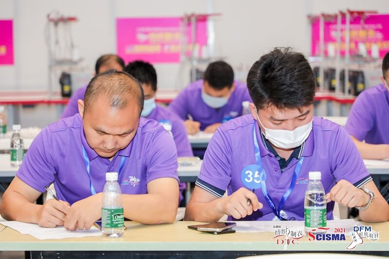</a></td>
<td><a href="./../../down/dtc/review/2021/review21-act_meachine-017.jpg" target="_blank" rel="noopener noreferrer"></a></td>
<td><a href="./../../down/dtc/review/2021/review21-act_meachine-018.jpg" target="_blank" rel="noopener noreferrer"></a></td>
<td><a href="./../../down/dtc/review/2021/review21-act_meachine-019.jpg" target="_blank" rel="noopener noreferrer"></a></td>
</tr>
<tr>
<td><a href="./../../down/dtc/review/2021/review21-act_meachine-020.jpg" target="_blank" rel="noopener noreferrer"></a></td>
<td><a href="./../../down/dtc/review/2021/review21-act_meachine-021.jpg" target="_blank" rel="noopener noreferrer"></a></td>
<td><a href="./../../down/dtc/review/2021/review21-act_meachine-022.jpg" target="_blank" rel="noopener noreferrer"></a></td>
<td><a href="./../../down/dtc/review/2021/review21-act_meachine-023.jpg" target="_blank" rel="noopener noreferrer"></a></td>
</tr>
<tr>
<td><a href="./../../down/dtc/review/2021/review21-act_meachine-024.jpg" target="_blank" rel="noopener noreferrer">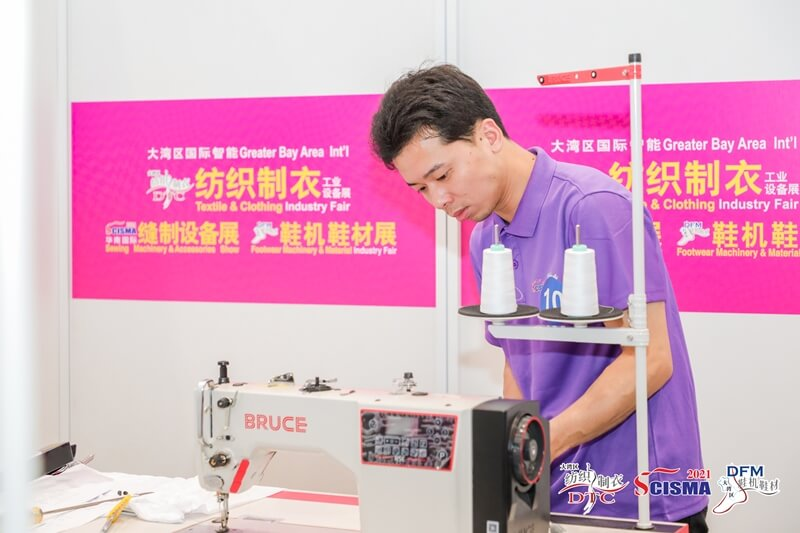</a></td>
<td><a href="./../../down/dtc/review/2021/review21-act_meachine-025.jpg" target="_blank" rel="noopener noreferrer">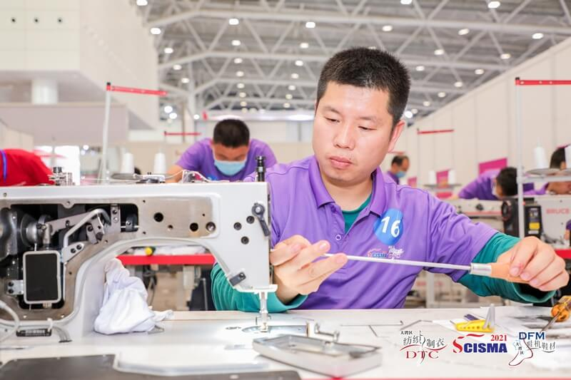</a></td>
<td><a href="./../../down/dtc/review/2021/review21-act_meachine-026.jpg" target="_blank" rel="noopener noreferrer"></a></td>
<td><a href="./../../down/dtc/review/2021/review21-act_meachine-027.jpg" target="_blank" rel="noopener noreferrer">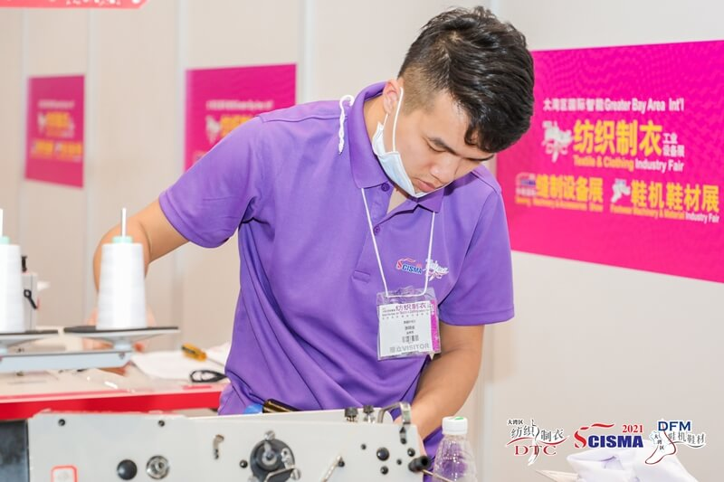</a></td>
</tr>
<tr>
<td><a href="./../../down/dtc/review/2021/review21-act_meachine-028.jpg" target="_blank" rel="noopener noreferrer"></a></td>
<td><a href="./../../down/dtc/review/2021/review21-act_meachine-029.jpg" target="_blank" rel="noopener noreferrer"></a></td>
<td><a href="./../../down/dtc/review/2021/review21-act_meachine-030.jpg" target="_blank" rel="noopener noreferrer"></a></td>
<td><a href="./../../down/dtc/review/2021/review21-act_meachine-031.jpg" target="_blank" rel="noopener noreferrer">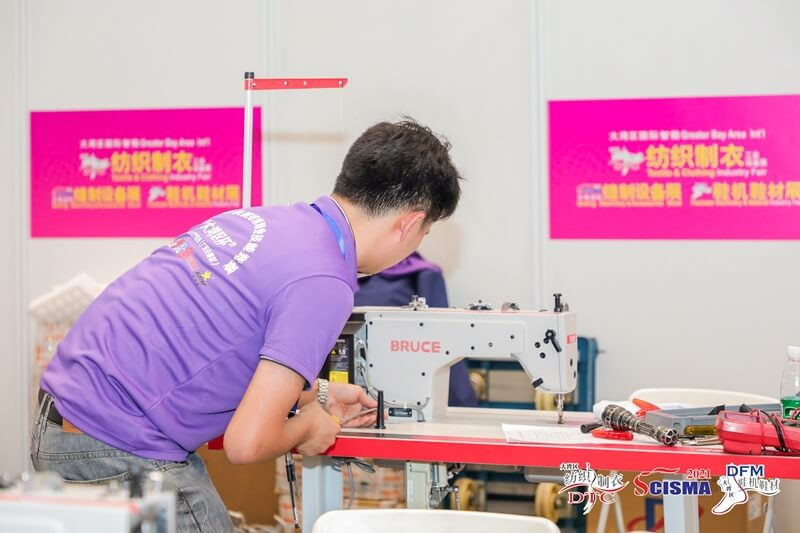</a></td>
</tr>
<tr>
<td><a href="./../../down/dtc/review/2021/review21-act_meachine-032.jpg" target="_blank" rel="noopener noreferrer"></a></td>
<td align="center" bgcolor="#A1228E"><span style="color: #ffffff;">APS排產沙盤模擬大賽</span></td>
<td><a href="./../../down/dtc/review/2021/review21-game-01.jpg" target="_blank" rel="noopener noreferrer"></a></td>
<td><a href="./../../down/dtc/review/2021/review21-game-02.jpg" target="_blank" rel="noopener noreferrer">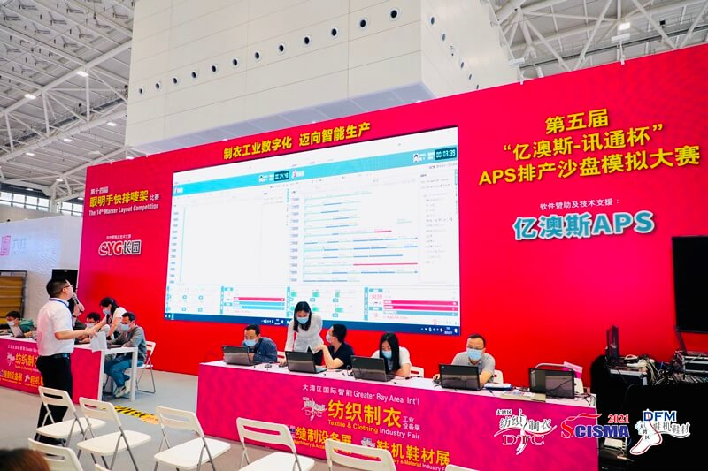</a></td>
</tr>
<tr>
<td><a href="./../../down/dtc/review/2021/review21-game-03.jpg" target="_blank" rel="noopener noreferrer">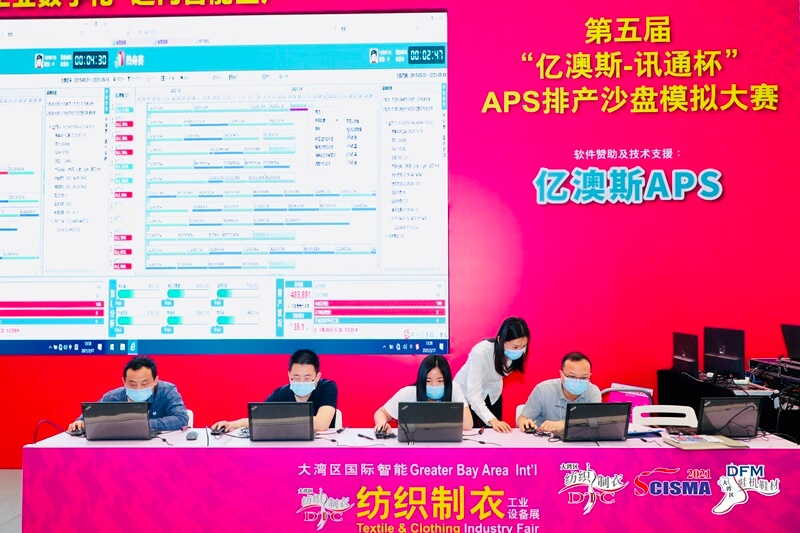</a></td>
<td><a href="./../../down/dtc/review/2021/review21-game-04.jpg" target="_blank" rel="noopener noreferrer">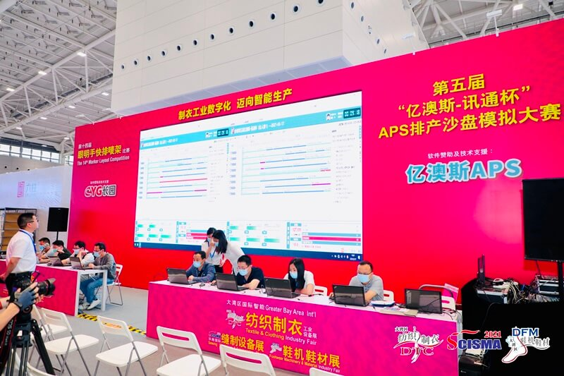</a></td>
<td><a href="./../../down/dtc/review/2021/review21-game-05.jpg" target="_blank" rel="noopener noreferrer"></a></td>
<td align="center" bgcolor="#A1228E"><span style="color: #ffffff;">眼明手快排嘜架比賽</span></td>
</tr>
<tr>
<td><a href="./../../down/dtc/review/2021/review21-marker-01.jpg" target="_blank" rel="noopener noreferrer"></a></td>
<td><a href="./../../down/dtc/review/2021/review21-marker-02.jpg" target="_blank" rel="noopener noreferrer">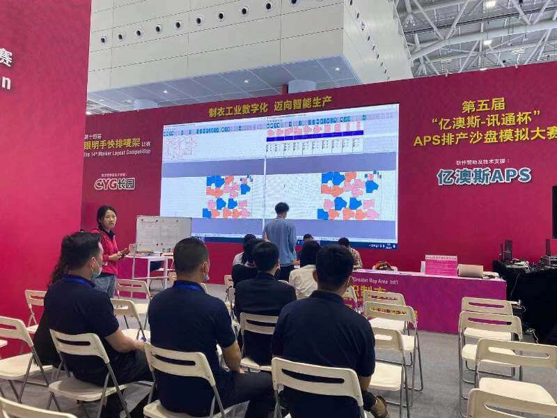</a></td>
<td><a href="./../../down/dtc/review/2021/review21-marker-03.jpg" target="_blank" rel="noopener noreferrer"></a></td>
<td><a href="./../../down/dtc/review/2021/review21-marker-04.jpg" target="_blank" rel="noopener noreferrer"></a></td>
</tr>
<tr>
<td><a href="./../../down/dtc/review/2021/review21-marker-05.jpg" target="_blank" rel="noopener noreferrer"></a></td>
<td><a href="./../../down/dtc/review/2021/review21-marker-06.jpg" target="_blank" rel="noopener noreferrer"></a></td>
<td><a href="./../../down/dtc/review/2021/review21-marker-07.jpg" target="_blank" rel="noopener noreferrer"></a></td>
<td><a href="./../../down/dtc/review/2021/review21-marker-08.jpg" target="_blank" rel="noopener noreferrer"></a></td>
</tr>
<tr>
<td><a href="./../../down/dtc/review/2021/review21-marker-09.jpg" target="_blank" rel="noopener noreferrer">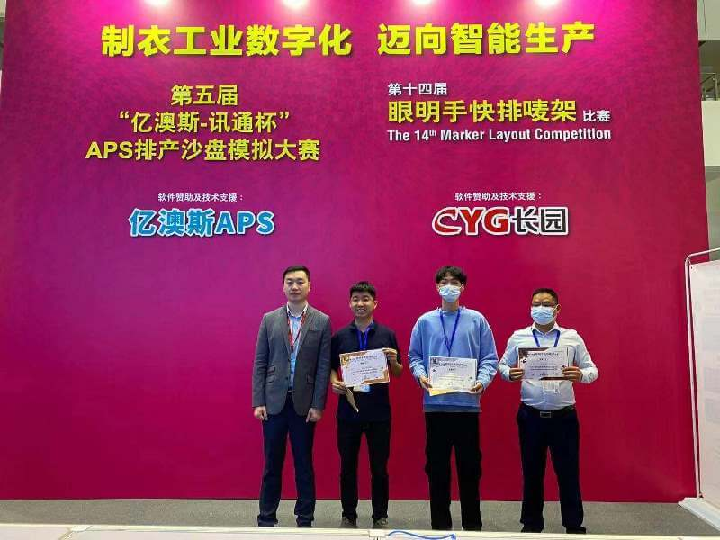</a></td>
<td><a href="./../../down/dtc/review/2021/review21-marker-010.jpg" target="_blank" rel="noopener noreferrer"></a></td>
<td></td>
<td></td>
</tr>
</table>
<p style="text-align: center;"><a href="#"></a><a href="./../../review-photo-2021-2/index.html">下一頁 &gt;&gt;</a></p>
]]></content:encoded>
					
		
		
			</item>
		<item>
		<title>武漢科普易能科技有限公司</title>
		<link>https://www.dtcshow.com/tc/booth23-p30/</link>
		
		<dc:creator><![CDATA[papercom]]></dc:creator>
		<pubDate>Tue, 14 Mar 2023 09:04:28 +0000</pubDate>
				<category><![CDATA[展商連結及預告]]></category>
		<guid isPermaLink="false">https://www.dtcshow.com/?p=14357</guid>

					<description><![CDATA[　　科普易能是一家專注於提供軟性材料智能切割全套解決方案的高新技術企業。易能現有湖北葛店與湖北京山兩大生產基地，總佔地面積七萬多平方米。公司以華中科技大學、武漢紡織大學技  <span><a href="./../booth23-p30/index.html" class="readmore">Continue reading &#8594;</a></span>]]></description>
										<content:encoded><![CDATA[<p>　　科普易能是一家專注於提供軟性材料智能切割全套解決方案的高新技術企業。易能現有湖北葛店與湖北京山兩大生產基地，總佔地面積七萬多平方米。公司以華中科技大學、武漢紡織大學技術開發為依托；以專注智能裁床高技術與高品質為企業定位；以成為全球技術領先的軟性材料智能切割企業為使命。公司擁有多項軟件著作權以及近百項專利技術，研製出KP-系列智能裁床，KP-L系列智能鋪布機。產品涉及服裝、家紡、醫療、氣模、沙發、鞋帽、箱包、毛絨玩具、汽車內飾及其它應用領域。迄今為止科普易能產品遠銷國內外40多個國家，現有5000餘用戶正在使用科普易能的產品。目前公司已在國內外建立起完善的優質服務體系，在國內設有65個售後服務中心，16個辦事處，全面實現“貼近用戶，延伸服務”。公司在越南、印度、孟加拉、土耳其、烏茲別克斯坦、巴西、南非等二十幾個國家具有完善的銷售及售後服務體系。售後服務遍布四大洲，確保了科普易能對客戶的快捷響應。</p>
]]></content:encoded>
					
		
		
			</item>
		<item>
		<title>浙江日聖縫紉機科技有限公司</title>
		<link>https://www.dtcshow.com/tc/booth23-m30_s/</link>
		
		<dc:creator><![CDATA[papercom]]></dc:creator>
		<pubDate>Sat, 04 Mar 2023 05:56:24 +0000</pubDate>
				<category><![CDATA[展商連結及預告]]></category>
		<guid isPermaLink="false">https://www.dtcshow.com/?p=14244</guid>

					<description><![CDATA[　　公司是中國著名品牌，日聖科技志存高遠，從成立之初就追求品質至上。日聖科技以“一切只為更快縫紉”為宗旨，倡導機電一體化，產品定位為“智能先鋒”。日聖科技願景是“打造國際  <span><a href="./../booth23-m30_s/index.html" class="readmore">Continue reading &#8594;</a></span>]]></description>
										<content:encoded><![CDATA[<p>　　公司是中國著名品牌，日聖科技志存高遠，從成立之初就追求品質至上。日聖科技以“一切只為更快縫紉”為宗旨，倡導機電一體化，產品定位為“智能先鋒”。日聖科技願景是“打造國際智慧縫製技術領先品牌”。<br />
　　為了實現轉型升級，為了更貼近縫紉機的產業鏈，SUNSIR日聖科技和行業一流企業強強合作，SUNSIR日聖科技斥巨資在中國縫製之都&#8212;台州，併購其它企業，建立了高端縫紉機研發製造基地，SUNSIR日聖科技目前佔地二萬多平米，建築面積4萬多平米，擁有員工500多人，SUNSIR日聖科技又投巨資引進了先進的製造裝備和檢測設備。 SUNSIR日聖科技經歷了貿易型、研髮型，向研發、製造、貿易於一體的蛻變，在轉型升級的道路上實現了華麗轉身，日聖科技已成長為國內縫紉機製造品牌重點企業，年產銷規模位於行業前列，產品結構豐富齊全，綜合競爭力處於行業優勢。</p>
]]></content:encoded>
					
		
		
			</item>
		<item>
		<title>浙江美機縫紉機有限公司</title>
		<link>https://www.dtcshow.com/tc/booth23-m30_m/</link>
		
		<dc:creator><![CDATA[papercom]]></dc:creator>
		<pubDate>Sat, 04 Mar 2023 05:54:35 +0000</pubDate>
				<category><![CDATA[展商連結及預告]]></category>
		<guid isPermaLink="false">https://www.dtcshow.com/?p=14238</guid>

					<description><![CDATA[　　公司成立於1995年，位於浙江省溫嶺市新河鎮,是中國縫製機械協會副理事長單位，排頭兵工業企業，是縫紉設備行業中一家集產品研發、製造、銷售、服務為一體的行業一流骨幹企業  <span><a href="./../booth23-m30_m/index.html" class="readmore">Continue reading &#8594;</a></span>]]></description>
										<content:encoded><![CDATA[<p>　　公司成立於1995年，位於浙江省溫嶺市新河鎮,是中國縫製機械協會副理事長單位，排頭兵工業企業，是縫紉設備行業中一家集產品研發、製造、銷售、服務為一體的行業一流骨幹企業。<br />
　　美機公司目前擁有員工1500餘人，廠房建築面積15萬平方米。公司擁有國內外先進的數控裝備、檢測儀器等800多台套，具有年產70萬台縫製設備的能力。公司二十多年來始終堅持專注工業縫紉機不動搖，目前產品涵蓋平縫系列、包縫系列、繃縫系列、特種機系列、電控電機系列 、自動化縫製單元系列。產品遠銷海內外100多個國家和地區。<br />
　　公司榮獲國家級高新技術企業、中國馳名商標、全國輕工業卓越績效先進單位、全國縫製機械標準化技術委員會先進委員單位、中國輕工業裝備行業三十強企業、縫製機械行業十強企業、省級企業研究院、省級企業技術中心、台州市瞪羚企業、溫嶺市政府質量獎、浙江製造精品、浙江省著名商標、浙江省名牌產品、浙江出口名牌、浙江省工商信用AAA級企業等榮譽稱號。</p>
]]></content:encoded>
					
		
		
			</item>
		<item>
		<title>台州市箭馬縫紉機有限公司</title>
		<link>https://www.dtcshow.com/tc/booth23-j68/</link>
		
		<dc:creator><![CDATA[papercom]]></dc:creator>
		<pubDate>Sat, 04 Mar 2023 05:50:26 +0000</pubDate>
				<category><![CDATA[展商連結及預告]]></category>
		<guid isPermaLink="false">https://www.dtcshow.com/?p=14233</guid>

					<description><![CDATA[　　公司成立於1997年，是國內一家集設計、研發、生產、營銷與服務為一體的專業生產切帶機、電腦切帶機、多功能電腦切帶機、超聲波電腦切帶機、釘扣機、高速電腦直驅釘扣機、自動  <span><a href="./../booth23-j68/index.html" class="readmore">Continue reading &#8594;</a></span>]]></description>
										<content:encoded><![CDATA[<p>　　公司成立於1997年，是國內一家集設計、研發、生產、營銷與服務為一體的專業生產切帶機、電腦切帶機、多功能電腦切帶機、超聲波電腦切帶機、釘扣機、高速電腦直驅釘扣機、自動送扣機等縫紉設備的高新技術企業。歷經十多年的專注發展，不斷創新，每年都有十幾個新產品投放市場，以滿足用戶的需求。 “JEMA箭馬”以先進的技術、穩定的質量、可靠的機械性能及優惠的價格遠銷國內外，贏得國內外用戶的依賴和讚譽。您的建議就是我的進步,您的滿意就是我的目標”，這是“JEMA箭馬”不斷前進的動力。我們始終堅持“以客戶需求為中心，比承諾做得更好“的經營理念，通過精心設計，精密的製造，為客戶提供功能多樣、質量上乘的切帶設備，滿足廣大客戶的需求與期望。 “箭馬”竭誠歡迎中外客戶光臨指導，洽談業務，願我們精誠合作，攜手共贏。</p>
]]></content:encoded>
					
		
		
			</item>
		<item>
		<title>東莞市凱弘自動化設備有限公司</title>
		<link>https://www.dtcshow.com/tc/booth23-f20/</link>
		
		<dc:creator><![CDATA[papercom]]></dc:creator>
		<pubDate>Sat, 04 Mar 2023 05:35:46 +0000</pubDate>
				<category><![CDATA[展商連結及預告]]></category>
		<guid isPermaLink="false">https://www.dtcshow.com/?p=14218</guid>

					<description><![CDATA[　　本公司為電腦針車廠家直銷，自主品牌研發並生產電腦花樣機系列產品。產品有1306,2010,2516,3020,311G,342G,4030，5030，6040，實用型  <span><a href="./../booth23-f20/index.html" class="readmore">Continue reading &#8594;</a></span>]]></description>
										<content:encoded><![CDATA[<p>　　本公司為電腦針車廠家直銷，自主品牌研發並生產電腦花樣機系列產品。產品有1306,2010,2516,3020,311G,342G,4030，5030，6040，實用型E款，最新產品G款，主要服務於手袋箱包，玩具，製衣，鞋帽廠。</p>
]]></content:encoded>
					
		
		
			</item>
		<item>
		<title>常熟市百聯自動化機械有限公司</title>
		<link>https://www.dtcshow.com/tc/booth23-e38/</link>
		
		<dc:creator><![CDATA[papercom]]></dc:creator>
		<pubDate>Fri, 03 Mar 2023 09:46:26 +0000</pubDate>
				<category><![CDATA[展商連結及預告]]></category>
		<category><![CDATA[縫製]]></category>
		<guid isPermaLink="false">https://www.dtcshow.com/?p=14199</guid>

					<description><![CDATA[　　百聯是一家專業提供以自動稱重充絨充棉專用設備及相關行業智能製造整體解決方案的高新技術企業。公司集研發、生產、銷售於一體，十多來年，為全球服裝行業提供解決方案和服務支持  <span><a href="./../booth23-e38/index.html" class="readmore">Continue reading &#8594;</a></span>]]></description>
										<content:encoded><![CDATA[<p>　　百聯是一家專業提供以自動稱重充絨充棉專用設備及相關行業智能製造整體解決方案的高新技術企業。公司集研發、生產、銷售於一體，十多來年，為全球服裝行業提供解決方案和服務支持。<br />
　　勵精圖治10餘載，憑藉雄厚綜合實力躍然成為行業標杆企業，聚焦智能製造，深耕行業，持續構築市場競爭壁壘。專利133項，其中發明專利19項、實用新型專利110項、外觀專利4項，實施率高達85%。軟件著作權61項，產品遠銷中國、美國、越南、韓國、緬甸、印度、歐州等30多個國家和地區，為全球5000多家客戶提供卓越服務。</p>
]]></content:encoded>
					
		
		
			</item>
		<item>
		<title>廣州永晉機械有限公司</title>
		<link>https://www.dtcshow.com/tc/booth23-r71/</link>
		
		<dc:creator><![CDATA[papercom]]></dc:creator>
		<pubDate>Thu, 02 Mar 2023 08:51:09 +0000</pubDate>
				<category><![CDATA[展商連結及預告]]></category>
		<guid isPermaLink="false">https://www.dtcshow.com/?p=14185</guid>

					<description><![CDATA[公司是一家專業生產和供應提花織機的企業，擁有20多年的機械開發經驗，並獲得CE認證和其他專利證書，是世界500強企業指定生產廠家之一，管理體系完善，公司技術力量雄厚，生產  <span><a href="./../booth23-r71/index.html" class="readmore">Continue reading &#8594;</a></span>]]></description>
										<content:encoded><![CDATA[<p>公司是一家專業生產和供應提花織機的企業，擁有20多年的機械開發經驗，並獲得CE認證和其他專利證書，是世界500強企業指定生產廠家之一，管理體系完善，公司技術力量雄厚，生產設備先進，生產能力強，產品暢銷全國各地，並遠銷中亞、中東、歐美等國家和地區。</p>
]]></content:encoded>
					
		
		
			</item>
		<item>
		<title>田島剌繡機械(中國)有限公司</title>
		<link>https://www.dtcshow.com/tc/booth23-m71/</link>
		
		<dc:creator><![CDATA[papercom]]></dc:creator>
		<pubDate>Thu, 02 Mar 2023 08:46:02 +0000</pubDate>
				<category><![CDATA[刺繡]]></category>
		<category><![CDATA[展商連結及預告]]></category>
		<guid isPermaLink="false">https://www.dtcshow.com/?p=14177</guid>

					<description><![CDATA[　　田島刺繡機械有限公司自1984年起獲日本田島工業株式會社委任為「田島多頭式電子刺繡機」之中港澳總代理。多年來，田島刺繡憑著精湛的技術和優越的服務，廣受業界認同。 　　  <span><a href="./../booth23-m71/index.html" class="readmore">Continue reading &#8594;</a></span>]]></description>
										<content:encoded><![CDATA[<p>　　田島刺繡機械有限公司自1984年起獲日本田島工業株式會社委任為「田島多頭式電子刺繡機」之中港澳總代理。多年來，田島刺繡憑著精湛的技術和優越的服務，廣受業界認同。<br />
　　1995年，在獲得日本田島刺繡全盤技術轉移後，首台價優而高質量的組裝平繡機，在嚴格遵行日本檢測標準下隆重推出，深受國內客戶歡迎。<br />
　　田島刺繡為了進一步提高產量以應付刺繡市場所需，於2001年選址廣東省揭陽市成立「田島刺繡機械（中國）有限公司」多年間成功研發出多款優質的「田島」品牌組裝刺繡機，迎合國內刺繡市場的增長需求，大大舒緩一直困擾客戶多年的機械進口配額限制。<br />
　　隨著全國業務的開展，惠州神田精密機械有限公司於2006年在廣東省惠州市成立，並作為田島刺繡在中國市場的營運總部向客戶提供快捷優質的售前、售後服務，包括刺繡機安裝、調試、培訓和維護保養等工作，著重進行刺繡科研開發。</p>
]]></content:encoded>
					
		
		
			</item>
		<item>
		<title>重機(中國)投資有限公司 東莞分公司</title>
		<link>https://www.dtcshow.com/tc/booth23-k30/</link>
		
		<dc:creator><![CDATA[papercom]]></dc:creator>
		<pubDate>Thu, 02 Mar 2023 08:29:04 +0000</pubDate>
				<category><![CDATA[展商連結及預告]]></category>
		<category><![CDATA[縫製]]></category>
		<guid isPermaLink="false">https://www.dtcshow.com/?p=14173</guid>

					<description><![CDATA[　　公司作為生產JUKI工業用縫紉機的工廠於2000年10月成立。 　　除了平縫縫紉機之外，還製造針織用、非服裝用縫紉機等種類繁多的縫紉機，生產台數和金額都佔JUKI整體  <span><a href="./../booth23-k30/index.html" class="readmore">Continue reading &#8594;</a></span>]]></description>
										<content:encoded><![CDATA[<p>　　公司作為生產JUKI工業用縫紉機的工廠於2000年10月成立。<br />
　　除了平縫縫紉機之外，還製造針織用、非服裝用縫紉機等種類繁多的縫紉機，生產台數和金額都佔JUKI整體的3成，是工業用縫紉機主要網點。我們嚴格遵守QCD，開展保護環境的工廠運營。<br />
　　2020年1月，將負責零部件生產和採購的“重機（寧波）精密有限公司（以下稱寧波）”作為子公司實施了吸收合併。</p>
]]></content:encoded>
					
		
		
			</item>
	</channel>
</rss>
